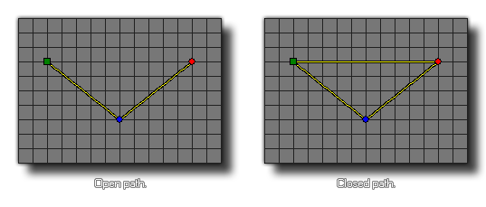

path_set_closed(index, closed);
| Argument | Description |
|---|---|
| index | The index of the path to change. |
| closed | Whether the path is closed (true) or not (false). |
Returns: N/A
This function can be used to flag a given path as being open
(false) or closed (true). A closed path has its start point
connected to its end point, forming a loop, and an open path has a
definitive, unconnected start and finish. This function changes the
actual path resource, and so will permanently affect how the path
is used by all instances in the game from the moment the function
is used until the end of the game.

path_set_closed(path0, true);
This will set the path indexed in the resource "path0" to be a closed path.